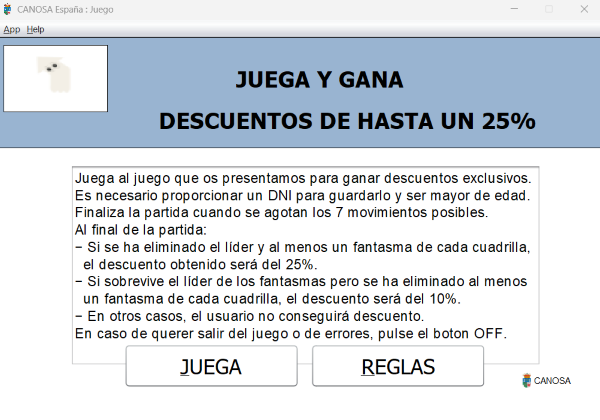
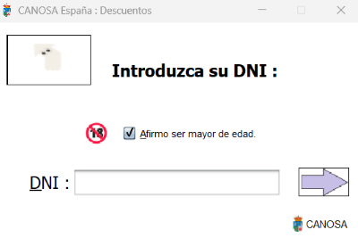

Como obtener descuentos
Como acceder a los descuentos
Para obtener un descuento debe de jugarse un minijuego simple de corta duracion
que le proporciona la propia aplicacion, en donde las recompensas del mismo son
los descuentos. Es necesario proporcionar un DNI para asignarlo al descuento
obtenido y registrarlo para la fase de reserva, ademas de ser mayor de edad.
Recordar que SOLO SE PERMITE UN DESCUENTO POR DNI, uselo sabiamente.
Para acceder al juego puede hacerse de dos formas:
- 1. Mediante la pestaña de titulo pulse el boton "Juega y gana DESCUENTOS", este le llevara directamente
a la pestaña con las instrucciones del juego y sus recompensas.
- 2. Mediante la pestaña de reservas, antes de acceder al formulario de datos del usuario, se le preguntara
si desea utilizar un descuento, si buscas un descuento con tu dni y no tienes ninguno asignado,
se le presentara la opcion de ganar uno, que te llevara tambien a la pestaña de juego.

Como iniciar el juego
Una vez alli, mostrara el siguiente texto con todas las recompensas obtenibles mediante el minijuego:
Finaliza la partida cuando se agotan los 7 movimientos posibles. Al final de la partida:
- Si se ha eliminado el líder y al menos un fantasma de cada cuadrilla, el descuento obtenido será del 25%.
- Si sobrevive el líder de los fantasmas pero se ha eliminado al menos un fantasma de cada cuadrilla, el descuento será del 10%.
- En otros casos, el usuario no conseguirá descuento.
Debajo de las recompensas, se encuentran dos botones:
- Jugar: Pulsando aqui dara inicio al juego.
- Reglas: Se mostrara una breve recopilacion del funcionamiento del juego.

Una vez hemos visto como conseguirlos, en caso de haber conseguido uno, la aplicacion le preguntara si quiere
registrarlo o si por contrario quiere conseguir otro. La pestaña de registro es la siguiente:
